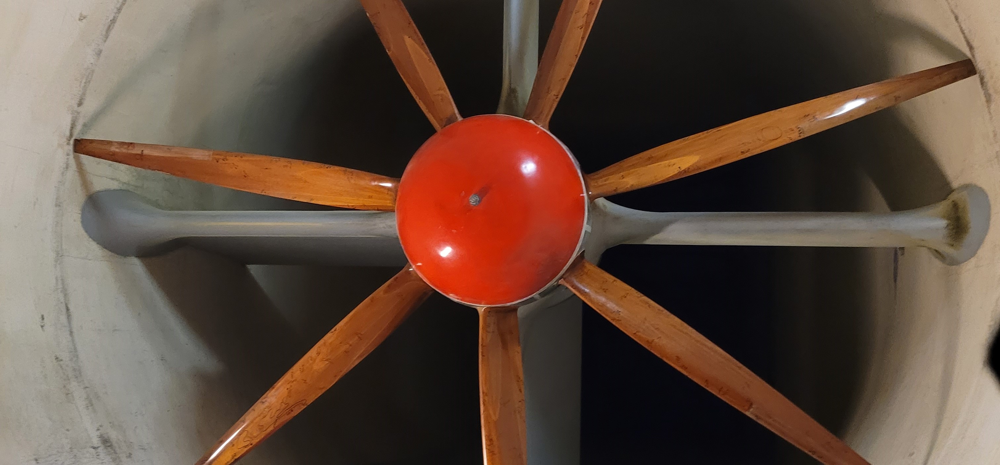

Aerospace Laboratory I: Propeller Preformance using the 3x3 wind tunnel
Summary:
The experiment delved into the impact of propeller geometry and pitch on performance metrics, highlighting a strong correlation between propeller geometry, advance ratio, and performance. Further analysis is warranted to discern the individual effects of diameter and pitch.
Propeller Preformance ReportsAbstract:
- Explored the influence of propeller geometry and pitch on propeller capability.
- Compared the performance metrics of four propellers of varying geometries and pitches in a 3x3 wind tunnel.
- Found performance metrics are dependent on propeller geometry and advance ratio.
Introduction:
- Objective: Measure performance of propeller geometries and evaluate influence of pitch on parameters like power, thrust, efficiency, and torque.
- Equipment: Wind tunnel, electric motor, control module, strain gage balance, differential pressure transducer, thermocouple, data acquisition chassis.
- Procedure: Testing two propellers, collecting data at different Reynolds numbers, and analyzing results.
Theory:
- Equations used to calculate power, efficiency, thrust, and torque of propellers.
- Variables include propeller RPM, indicated pressure, drag, air velocity, density, propeller diameter, and rotation speed.
Methods and Procedure:
- Conducted in 3x3 wind tunnel using specified equipment and measurements.
- Data collected at different indicated pressures and propeller RPM values.
- Data processing done in MATLAB.
Results and Discussion:
- Measured thrust consistently exceeded tare thrust.
- Unexpected trends observed in thrust, efficiency, and torque data.
- Potential sources of error discussed, including data distortion and variation in propeller dimensions.
Conclusion:
- Experiment objectives outlined, highlighting unexpected results and limitations.
- Recommendations made for future experiments to address limitations and improve accuracy.